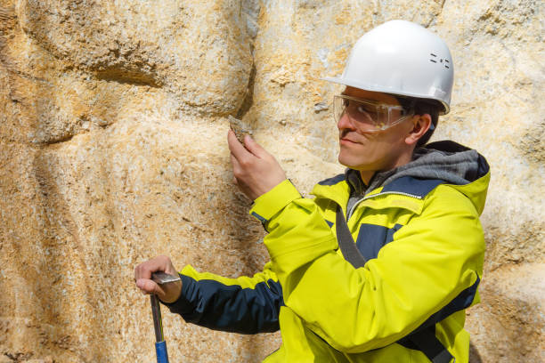

Potencial de la Geología y el sector IT
En este artículo se explora el potencial de unir los conocimientos de la geología
y la tecnología de la información (IT). Se destaca cómo la tecnología de la información
puede permitir a los geólogos recopilar y analizar datos de manera más eficiente y
precisa que nunca, lo que a su vez les permite desarrollar modelos más precisos y
predicciones sobre los procesos geológicos. Además, se resalta la importancia del
conocimiento geológico para el desarrollo de sistemas de información geográfica y
la gestión de recursos naturales, y cómo juntas, estas dos disciplinas pueden ayudar
a abordar algunos de los desafíos más urgentes que enfrenta el mundo en la actualidad.
La geología es la ciencia que estudia la Tierra, su composición, estructura, procesos
y su historia. Por otro lado, la tecnología de la información (IT) se refiere al conjunto
de herramientas y técnicas utilizadas para procesar, almacenar y comunicar información.
A primera vista, estas dos disciplinas pueden parecer muy diferentes, pero en realidad
tienen un gran potencial cuando se unen.
La geología siempre ha sido una disciplina que se apoya en la tecnología para recopilar
datos, desde la medición de terremotos hasta la exploración de minerales.
Con el advenimiento de nuevas tecnologías, como los sistemas de información geográfica
(GIS) y el aprendizaje automático, los geólogos pueden obtener una cantidad de información
sin precedentes sobre la Tierra. Esto, a su vez, permite a los científicos desarrollar modelos más precisos y predicciones sobre los procesos geológicos,
como la actividad volcánica, la formación de montañas y la erosión.
Por otro lado, la tecnología de la información se beneficia enormemente del conocimiento geológico.
La geología es fundamental para el desarrollo de sistemas de información geográfica, que se
utilizan en una amplia variedad de campos, desde la planificación urbana hasta la agricultura.
La capacidad de comprender la composición y estructura de la Tierra es esencial para cualquier
proyecto que involucre la construcción de infraestructuras, como carreteras, puentes y edificios.
Además, la geología y la tecnología de la información son esenciales para abordar algunos
de los desafíos más urgentes que enfrenta el mundo en la actualidad, como el cambio climático y
la gestión de recursos naturales. Por ejemplo, los geólogos pueden utilizar la tecnología de la
información para recopilar datos sobre el cambio climático y desarrollar modelos de predicción
que ayuden a las comunidades a prepararse para eventos climáticos extremos. Asimismo,
los sistemas de información geográfica se utilizan para gestionar los recursos naturales,
como el agua, los bosques y los minerales, de manera sostenible.
En definitiva, la unión de la geología y la tecnología de la información tiene un potencial
enorme. Los avances en la tecnología de la información están permitiendo a los geólogos recopilar
y analizar datos de manera más eficiente y precisa que nunca, lo que a su vez les permite
desarrollar modelos más precisos y predicciones sobre los procesos geológicos. Por otro lado,
el conocimiento geológico es fundamental para el desarrollo de sistemas de información geográfica
y la gestión de recursos naturales. Juntas, estas dos disciplinas pueden ayudar a abordar algunos
de los desafíos más urgentes que enfrenta el mundo en la actualidad.
Ingresando al mundo IT desde la geología
Este artículo explora la idea de que los profesionales de la geología pueden ingresar
en la industria de la tecnología de la información (IT) debido a que muchas de las
habilidades transferibles requeridas en IT son también aplicables a la geología.
Se sugiere que los geólogos pueden comenzar adquiriendo habilidades técnicas a través
del aprendizaje autodirigido, así como también aplicando estas habilidades en proyectos
personales. Otras opciones incluyen buscar oportunidades de trabajo que combinen
habilidades de geología y tecnología en empresas especializadas en geotecnología o
en áreas como la minería o la energía. En general, se concluye que los geólogos tienen
una oportunidad de ingresar al mundo de IT y expandir sus habilidades en un campo en
constante crecimiento.

La industria de la tecnología de la información (IT) es una de las más dinámicas y
de más rápido crecimiento en el mundo actual. Los profesionales de IT son altamente
valorados por su capacidad para innovar y resolver problemas complejos. Sin embargo,
muchas personas se sienten intimidadas por la idea de entrar en este campo,
especialmente si no tienen experiencia previa en tecnología. Pero, ¿qué pasa si te dijera
que hay una forma de ingresar al mundo de IT desde una carrera aparentemente no
relacionada, como la geología?
En primer lugar, es importante tener en cuenta que muchas de las habilidades requeridas
en IT, como la resolución de problemas, la toma de decisiones y el pensamiento crítico,
son habilidades transferibles que se pueden aplicar en una amplia gama de disciplinas.
Los geólogos, por ejemplo, están entrenados para recopilar y analizar datos, identificar
patrones y tendencias, y crear modelos para entender procesos complejos en la Tierra.
Estas habilidades se traducen fácilmente al campo de la tecnología, donde la recopilación
y análisis de datos, la identificación de patrones y tendencias, y la creación de modelos
son fundamentales para el éxito.
Una forma de comenzar a adquirir habilidades técnicas es a través del aprendizaje
autodirigido. Los recursos en línea como cursos en línea y tutoriales son una excelente
manera de comenzar a aprender habilidades de codificación y programación. Además, muchas
organizaciones de la industria ofrecen capacitación y desarrollo profesional en línea
que pueden ser útiles para adquirir habilidades específicas relacionadas con la tecnología.
También es importante encontrar oportunidades para aplicar estas habilidades. Una forma
de hacerlo es a través de proyectos personales, como el desarrollo de una aplicación o
sitio web. Trabajar en proyectos personales no solo te da la oportunidad de aplicar tus
habilidades, sino que también te ayuda a construir un portafolio de trabajo que puedes
usar para demostrar tus habilidades a posibles empleadores.
Otra opción es buscar oportunidades de trabajo que puedan combinar tus habilidades de
geología y tecnología. Las empresas que se especializan en geotecnología, como las que
desarrollan software de mapeo o análisis geoespacial, pueden ser una buena opción.
También es posible encontrar trabajos en áreas como la minería o la energía que
requieren habilidades técnicas.
En resumen, si estás interesado en ingresar al mundo de la tecnología, pero no tienes
experiencia previa en el campo, no te desanimes. Muchas de las habilidades que se requieren
en IT son transferibles, y hay muchas oportunidades para aprender habilidades técnicas y
aplicarlas en diferentes campos. Si eres un geólogo en busca de un nuevo desafío o
simplemente estás interesado en expandir tus habilidades, considera la posibilidad de
ingresar al mundo de IT.